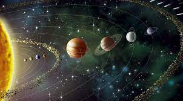
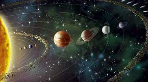

PRESENTACIÓ
Aquesta web permet accedir a un dels serveis amb més demanda actualment, ja què som la primera agència de viatges que ofereix viatges als planetes del Sistema Solar. Una llarga i dilatada experiència en viatges arreus del món, inclús a la lluna, ens ha fet ser pioners amb aquesta iniciativa que està causant furor entre milians de persones.
En aquest lloc web s'ofereixen una sèrie de viatges programats als planetes del Sistema Solar de Mart, Venus, Saturn, Urà i Neptú. Cadascún d'ells té les seves peculiaritats, la qual cosa permet realitzar i programar diferents activitats per passar-ho bé i disfrutar.
Gaudir dels racons de cada planeta, de les diferents superfícies, i dels fenòmens meteorològics és una experiència única. A més a més, es podràn conéixer les cultures tant diferents de cada planeta en quan als seus habitants. La fisiología dels habitants extraterrestres es molt variada i sorprenent.
 
